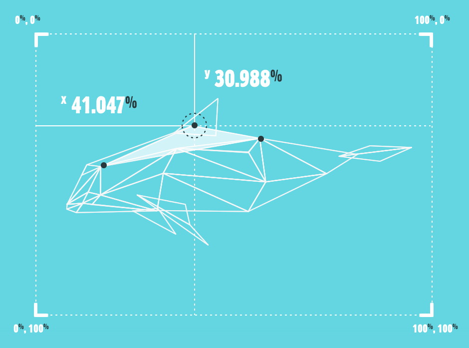
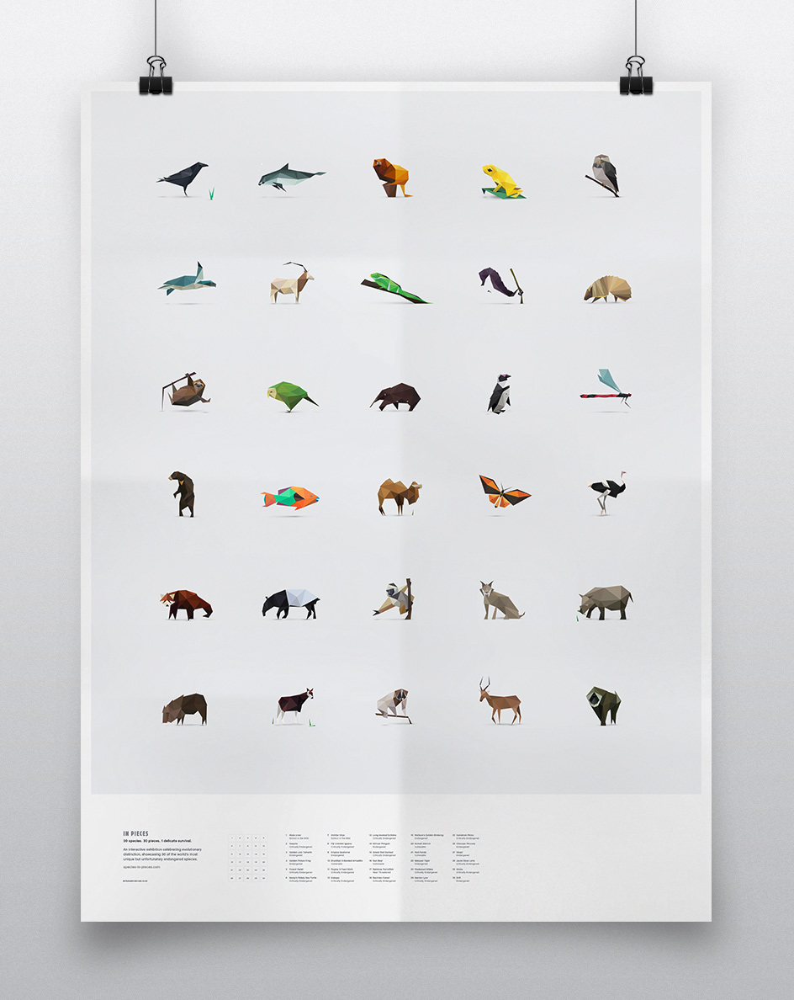
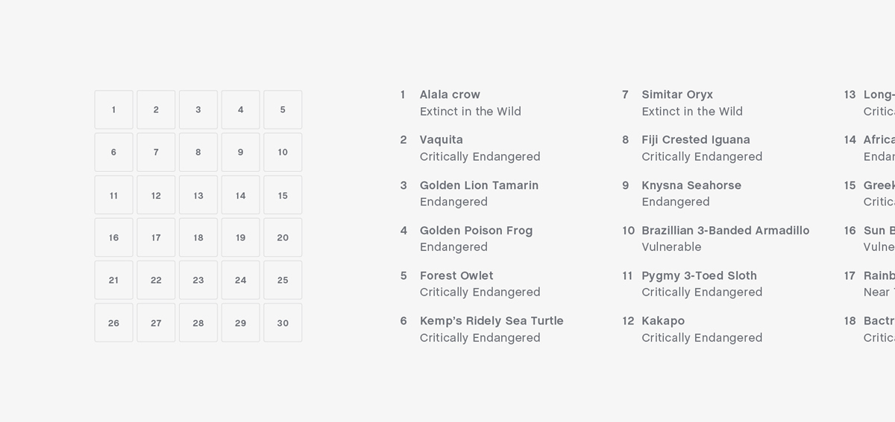
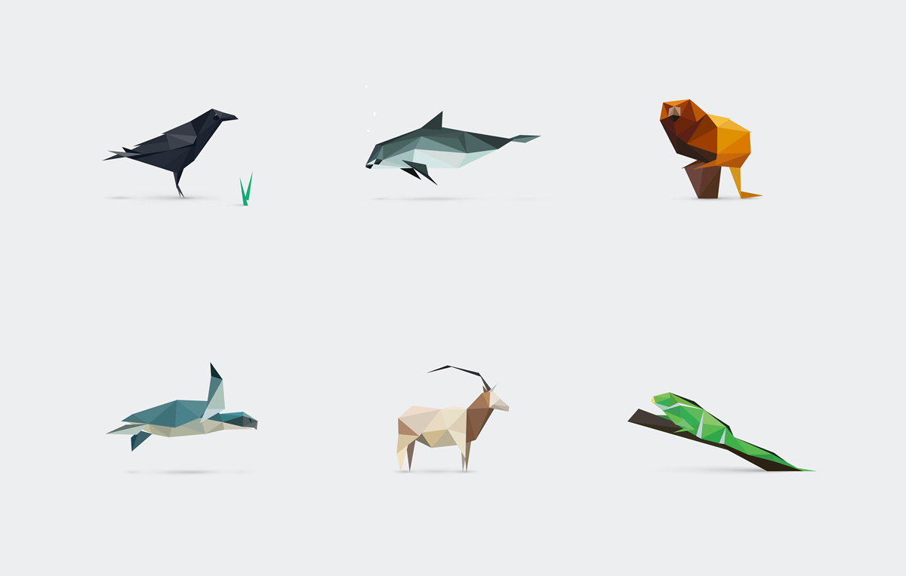
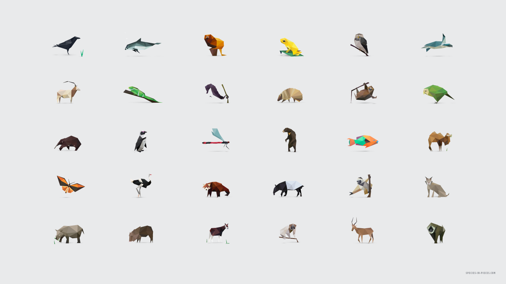

关于这个项目
In Pieces 是一个交互展览，它包含30种有趣但不幸濒临危机的物种，它们的生存现状正如动画所展示的，支离破碎。
As Featured On

Each species has a common struggle and is represented by one of 30 pieces which come together to form one another. The collection is a celebration of genic diversity and an attempting reminder of the beauty we are on the verge of losing as every moment passes. These 30 animals have been chosen for their differences, so that we can learn about species we didn't know about previously as well as the struggles they have surviving. Many of them evolved in a particular way which makes them evolutionarily distinct.
Take for example the Kakapo, an animal which evolved without natural predators and thus didn’t require instincts to defend itself. Unfortunately — and as is the case with most of the species showcased here — humans began easily hunting upon encroaching their range, then introduced the stoat and other forms of pest control for other species. The Kakapo was almost completely wiped out through this introduction and fights on today because of this catastrophic lack of judgement.
When you dig into a lot of research around this topic, it’s not long before you see the real darkness that is going on. Millions of years of evolution has occurred and humans are in danger of ruining it through desperation for financial gain or greed.
There are some species here who as grim as it sounds, would require a small miracle to survive because the numbers are too low to rationally continue to exist, Vaquita being one such example.
In Pieces hopes to educate and inspire, and provoke thought on this complex and intricate topic. I sincerely hope that you can take something new away and enjoy this collection as much as I enjoyed researching, designing and building it.
动效原理
一个简单属性的奇思妙想，在这里使用的核心技术都是CSS属性——没有用到CANVAS或者WEBGL
自从听说CSS多边形以来，我对这种技术感到有点惊讶，所以我想设计一个东西，它不仅本身作为一个项目，而且要尽可能让这个属性使用的更广。
这个CLIP-PATH属性仅能够在WEBKIT浏览器中使用，当然这是一个最大的限制，但同时他几乎能在所有移动端上使用。FIREFOX浏览器不支持CLIP-PATH属性，但是可以通过SVG引入，因为如此，要适配FIREFOX就是另一套不同的编码方式。所以我打算专注于CSS路线。
没听说过它吗? 它就是这样的:
-webkit-clip-path: polygon( 40% 40%, 50% 60%, 60% 40% );
So, in essence — each shape is being morphed, moved and toyed with by a new set of co-ordinates, and as they are maintained as triangles throughout, this means 3 points, with CSS transitions to link up the movements. No tricks or tools have been used to get the illustrated results, code-wise or graphically. Point by point, shape by shape, each one has been handcrafted via a personally-created tracing JS function after illustration.
If you have any questions on the technique or the project at all, please feel free to whip me a Tweet!
动机&链接
In Pieces 和任何慈善机构或组织都没有关系，但我还是想列出一些正努力拯救濒临灭绝动物的组织机构
Edge of Existence* – a programme run by Zoological Society of London, deals directly with evolutionarily distinct animals, and has a great list of 100 mammals and other types of species which you can look through if your interests have been perked. *This project is not associated with Edge of Existence.
Of the animals featured here, a number have great causes dealing specifically with their battles, or otherwise aid in respect to the species' family.
- Indonesia Hornbill Conservation Species
- Indonesia Nature Film Society
- WWF & Habitat Conservation
- Vaquita – Last Change for the Desert Porpoise
- Save the Golden Lion Tamarin
- Rainforest Trust
- Edge of Existence - Forest Owlet
- Sea Turtle Conservancy
- Sahara Conservation Fund
- Fijian Crested Iguana Breeding Program
- Project Seahorse
- Caatinga Association - Brazilian 3-Banded Armadillo
- ZSL Initiative for Pygmy 3-Toed Sloth
- Kakapo Recovery
- Long-beaked Echidna
- Edge of Existence – Long-beaked Echidna
- SANCCOB initiative for Penguins
- Bornean Sun Bear Conservation Centre
- Nature Conservancy - Parrotfish
- SOS Wild Camel
- Sawai Ecotourism – Wallace's Golden Birdwing
- African Wildlife Foundation – Somali Ostrich
- Red Panda Network
- Malay Tapir Project
- Sadabe – Diademed Sifaka
- SOS Lynx
- International Rhino Foundation
- World Land Trust – Chocoan Peccary
- Okapi Project
- Javan Slow Loris Project
- Hirola Program
- Drill Project
Sources
I have used an extensive range of sources to gather the information within this site, specifically the statistical data which is fairly tough to find. I thank each source sincerely, and wish to highlight their great resources here:

分享
如果你很欣赏这个项目，请告诉你的朋友！
Poster
Take the pieces home with this poster, available here for €30. All personal proceeds* will go to Evolutionarily Distinct & Globally, an initiative which deals with the kind of species showcased within In Pieces.
 Wallpapers
You can download a range of wallpapers of specific species for your desktop within the exhibition, but here you can have them all in one place too. Select which device takes your fancy below.

- Macbook (Retina 2560x1600)
- Large Desktop (1920x1080)
- Small Desktop (1366x768)
- iPad (1024x1024)
- Mobile – Frog (750x1334)
- Mobile – Scimitar Oryx (750x1334)
- Mobile – Wallace’s Golden Birdwing (750x1334)
* Personal income on poster sale is a percentage of the poster cost. Around 20% of the respective per poster is taken personally and sent on to EDGE.